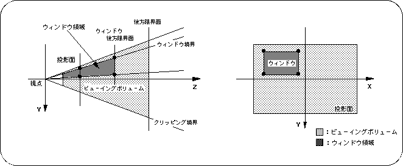

Return to previous page | Return to menu | Go to next page
In SGL, using the concept of clipping, a rectangular area for display restriction called a window can be set for the projection plane. Objects can be shown or hidden inside and outside this area.
Up to two windows can be held in one screen. One of these is set as the default window from the beginning. This window is the same size as the projection screen (TV monitor) and can be reset in the program.
In SGL, a window is defined as shown below.

In SGL, a window is defined as a rectangular area in the projection plane. If this is interpreted three-dimensionally, it refers to the area that should be projected onto the rectangular area of the projection plane in the viewing volume (in the figure: dark shaded area). By specifying the window area, the display / non-display of the object is determined inside and outside.
The window size can be set up to the same size as the projection plane.